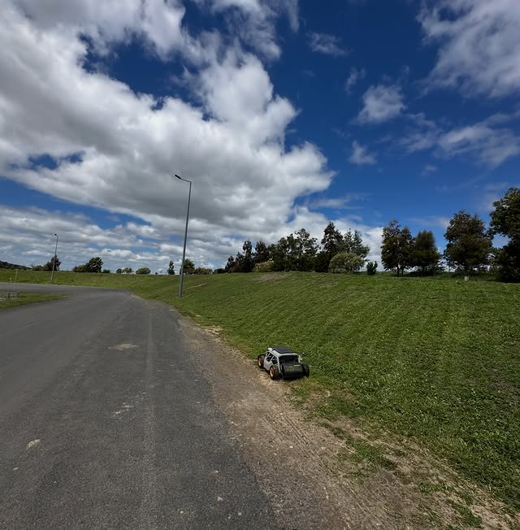
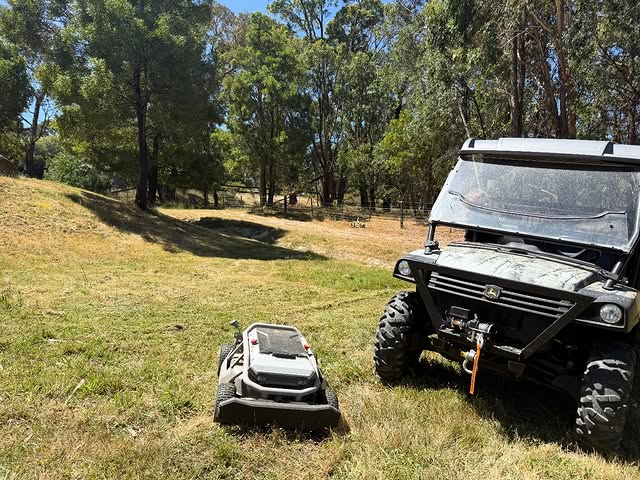

Max slope
60°
Where ride-ons cannot operate

Speak directly
0466 188 921
// OUR CAPABILITY
Max slope
60°
Where ride-ons cannot operate
Faster
3×
vs manual on difficult terrain
Remote
100%
Operator clear of the work zone
// CAPABILITIES
We operate a fleet of remote-controlled mowing platforms purpose-built for steep slopes, live traffic verges, embankments and ground around water and infrastructure. Sites where operator safety, speed and finish all matter at once.

Zero Operator Risk// WHO WE SERVE
01 · Government & Civil
Road verges, sound walls, median strips, embankments and bridge approaches. Cut to spec without closing lanes or putting crews near traffic. Compliant operation, full reporting, programme-ready.
02 · Commercial Venues
High-foot-traffic sites where a robotic mower in operation is visible PR for the venue. Customers notice it, photograph it, talk about it. A maintenance task converted into a brand signal: modern, environmentally responsible, ahead of the curve.
03 · Residential & Safety
Farm properties, rural blocks, fire-zone perimeters, and the steep ground around dams and drains where snakes and injury risk make manual mowing dangerous. Capability previously locked behind government contracts, now accessible for property owners with serious terrain.
// HOW IT WORKS
01
We walk the site, identify hazards and access routes, and confirm whether the terrain suits remote-controlled operation. Written scope and pricing follows within 48 hours.
02
Crew arrives with the platform, operator stays clear of the work zone. Zero emissions, low noise, full traffic-management compliance where required.
03
Before-and-after documentation, hours-on-site, any incidents or near-misses logged. Procurement-grade paperwork for clients who need it, simple summaries for those who don't.
04
Recurring sites move onto a scheduled programme - quarterly, monthly, or as the season dictates. One point of contact, one platform, one accountable operator.
// FAQ
Remote-controlled mowing platforms are purpose-built mowers operated wirelessly by a crew member at a safe distance from the work zone. The same class of equipment Australian road authorities use, now available to councils, civil contractors, commercial venues and property owners with serious terrain.
Slopes up to 60 degrees, road verges, embankments, sound walls, median strips, around water infrastructure, fire-zone perimeters, retailer carparks and fast-food forecourts. Anywhere conventional mowing is too dangerous, too slow or too expensive to do safely.
100% remote operation keeps crews clear of traffic and unstable ground. 60-degree slope capability where ride-ons cannot safely operate. Zero emissions. Up to 3x faster on difficult terrain compared to manual or specialist alternatives.
Where the use case justifies it, yes. Acreage, fire-zone perimeters, the ground around dams and drains, and rural blocks where snakes or injury risk make manual mowing dangerous. We do not service standard suburban lawns - that is not what the platform is designed for.
We walk the site, identify hazards and access routes, and confirm whether the terrain suits remote-controlled operation. Written scope and pricing follows within 48 hours. Site assessments are no-cost and no-obligation.
For most sites in metropolitan Melbourne, within 5 to 10 business days from scope sign-off. Regional Victoria timing depends on travel logistics and any traffic-management requirements specific to the site.
For council and road-authority work, yes. We coordinate the appropriate traffic management plan as part of the scope and budget. Commercial and residential sites typically do not require it.
You receive before-and-after documentation, hours-on-site and any incidents or near-misses logged. Procurement-grade paperwork for clients who need it, simple summaries for those who do not. Recurring sites move onto a scheduled programme - quarterly, monthly or seasonal.
Tell us about the terrain, location and frequency you need. We come back within one business day with a no-cost, no-obligation site walk on the calendar.
Or skip the form